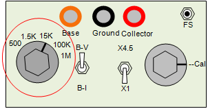
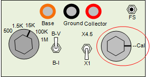
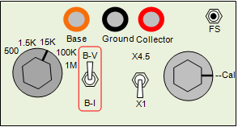
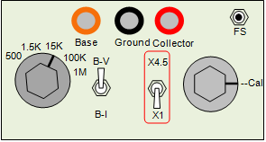
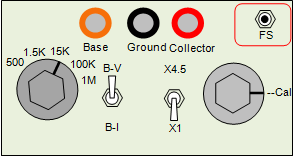

The rotary switch selects the Collector series resistor value. The
resistor limits the current available from the Collector sweep Voltage
source. It also is used as the current measuring device. For measuring
higher current values in the mA range, select lower resistors such as
the 500 ohm. For current in the uA range select a higher value resistor
such as the 100K ohm. Current resolution is dependent on the value
selected. It is approximately 15V / (R * 4095). The 500 ohm resistor
has a resolution of abou 7uA. Noise generally makes
the smallest measured value many times the resolution. Resolution
is increased with slow scans and with averaging and filtering.
Resolution is not accuracy. Calibration helps with accuracy but there
are still non-linearities in the system.

The potentiometer adjusts the Collector sweep voltage amplitude. When
setting the collector voltage from the user inteface, the potentiometer
should be in the calibration
Cal position to obtain the correct collector
voltage output. Reducing the amplitude also reduces the DAC voltage
step size. A smoother waveform is possible for testing devices, such as
diode forward voltage characteristics, that need only low amplitude
excitation.

The
B-V / B-I toggle switch selects between a voltage output and a
current output on the Base output terminal. Base current steps are used
to test bipolar transistors such as NPN transistors. Base voltage steps
are used for testing field effect transistors such as MOS FETs. The
base voltage has a current compliance that is achieved with a 1K
resistor within the amplifier feedback loop. At 10V, the maximum
current before voltage drooping is 5mA. A zero volts, 15mA is
available. The resistor helps to protect the amplifier from capacitive
loading.

The
4.5X / 1X toggle is a gain switch for the collector voltage
measurement. At 1X, the voltage resolution is about 15V/4095 = 4mV.
Resolution is increased to about 1mV with the switch at 4.5X. To
prevent confusion in the high gain mode, the display is clipped above
3.3V. Without clipping, current changes that occur at higher voltages
would appear as a breakdown event at 3.3V. However, all data is saved
to the trace file.

The FS input is an 1/8th inch audio jack that is intended for a nomally
open foot switch. Closing the foot switch initiates a trace sweep
function. This allows hands free trace recording when probing a circuit.
Main